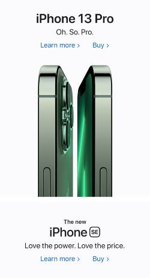

Repetition
Repetition is the simple act of repeating an element many times in a design. Repetition is used to present accoridng to what the users expecations. This is accomplished though consistancy which makes the user feel more comfertable. Huge incorperated demonstrates repeptition with the consistant layout pattern of "image, paragraph, image, paragraph, etc."
White Space & Clean Design
White space is also reffered to as negative space or open space. With the added blank space on a page, it is able to draw attetion to certain titles or images as well as help guide the user from one element to another smoothly. This is shown in the Wealthsimple website as each title, paragraph, button, and image has a clear and distinct space between one another.
Visual Hierarchy 
Visual Hierarchy is used to rank certain elements and control the order you want your users to view them. The apple website demonstrates this by showing the newest and currently most "valued" item first. The following items gradually decrease in value as you scroll down the page.